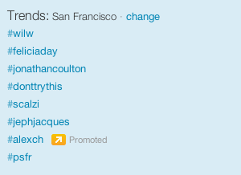

More Alex:
Hey, do these work? If not, let me know, OK?
Install: Drag the link below to your bookmarks bar.
Fonzie
Usage: Select some text on the page. Click the "Fonzie" bookmark link. See the font.
Source: hosted on GitHub
Update: Fonzie gets a bit cooler, now skipping common values like "0px" and "none".
- wilw
Install: Drag the link below to your bookmarks bar.
Better Trends
Usage: Click it when you get tired of the insipid bullshit in your Trends sidebar.
Better trend suggestions welcome!
The New Twitter UI doesn't show an RSS feed for the user you're looking at anymore. Instead, it only shows you an RSS feed for your own tweets, which seems sort of vainglorious to me.
Here's a bookmarklet, written by @jacobrothstein and converted by @alexch using Gruber's Bookmarklet Builder script.
Drag this little dude to your bookmarks bar and click it when you're on someone's timeline. It'll put an "RSS" link right under the user's bio, for you to click or copy.
Twitter RSS
Source:
$('.profile-details').
append('<a href="/statuses/user_timeline/' +
$('span.screen-name').text().replace('@','') +
'.rss">RSS</a>')
Update: fixed to work in Firefox (thanks to Adam Curry for bug report)
Update (2011-06-23): now uses twitter screen name, not user id, in RSS URL
Cloudant's Heroku console (https://cloudant.com/futon/database.html) wraps the normal futon in some extra HTML, showing the heroku header and a Cloudant 'overview'. Unfortunately this pushes down the main futon content so that even when you're scrolled down all the way, on long pages, you can't see the futon controls ('showing 1-82 of 82 rows' and the 'rows per page' and 'next page' widgets). This trivial bookmarklet fixes it by giving the 'wrap' div a height of 88% instead of 100%.
Cloudant Fix
When Google disabled sharing inside Google Reader they didn't really disable it so much as hide it. While we work on ways to bring it back more permanently, here's a quick bookmarklet that unhides the legendary People you follow (1000+) sidebar.
Unhide Friends
All bookmarklets on this page were written (or improved) by Alex Chaffee and are in the public domain. If you like them, drop me a line.
Built usingBookmarklet Builderby John Gruber.